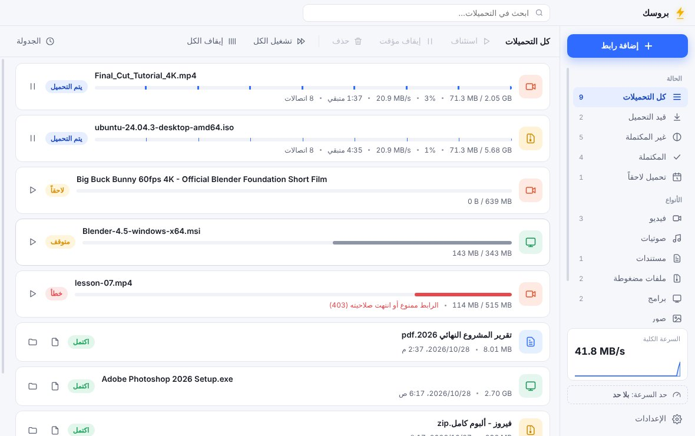
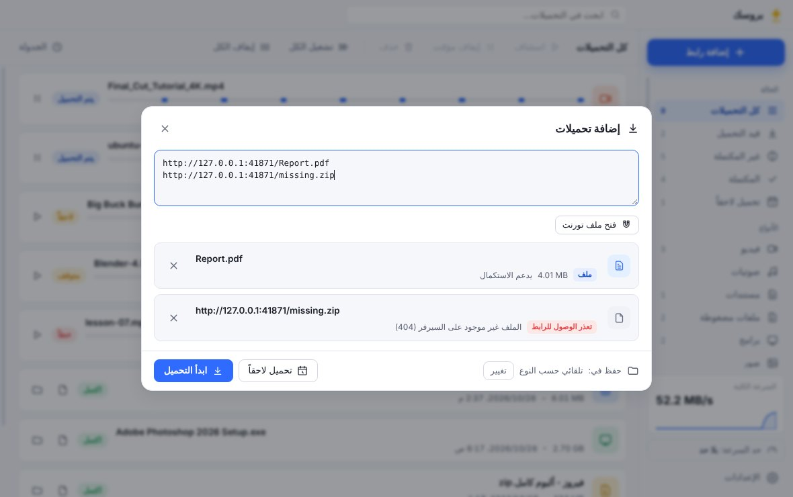
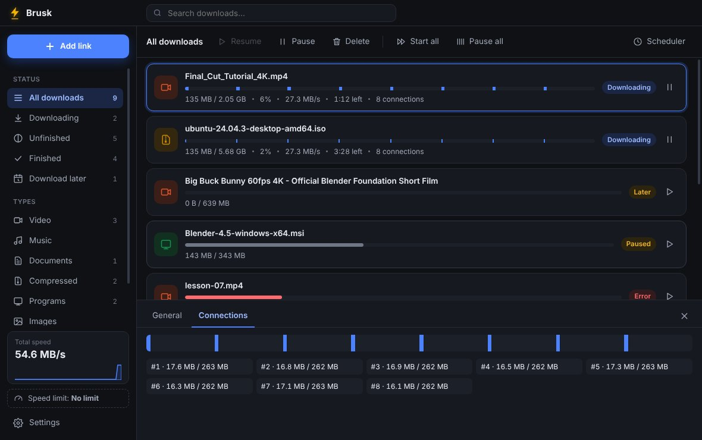

مدير تحميل مجاني لـ Windows و macOS و Android. بيقسم الملف على عدة اتصالات، بيكمّل من وين وقف، وبينزّل فيديوهات يوتيوب والتورنت، والتقاط مباشر من المتصفح.
A free download manager for Windows, macOS and Android. Several connections per file, resume where it stopped, YouTube videos, torrents, and one-click capture from your browser.
تنزيل بروسكDownload Brusk بروسك يعني البرق بالكردي · مجاني ومفتوح المصدر · بدون إعلانات · عربي وإنجليزيBrusk means lightning in Kurdish · Free and open source · No ads · Arabic and English
للكمبيوتر وللموبايل. اختار نظام جهازك.For computers and phones. Pick your system.
جمعنا أحسن ميزات مدراء التحميل وصلّحنا مشاكلهم.The best of download managers, with their problems fixed.
حتى 32 اتصال للملف. الاتصال يلي بيخلص بياخد نص أكبر جزء باقي، فالسرعة بتضل عالية للآخر.
Up to 32 connections per file. A finished connection takes half of the biggest part left, so speed stays high to the end.
انقطع النت أو سكّرت الجهاز؟ بروسك بيكمّل من نفس النقطة، وبيعيد المحاولة لحاله.
Lost the connection or shut down? Brusk picks up at the same byte and retries by itself.
اختار الجودة لحد 4K، أو صوت فقط MP3، قوائم تشغيل كاملة، وترجمة.
Pick any quality up to 4K, audio-only MP3, whole playlists, and subtitles.
اختار الملفات يلي بدك ياها قبل ما يبلش، مع حد سرعة الرفع ونسبة المشاركة.
Choose which files you want before it starts, with upload limits and share ratio.
نزّل بالليل، وطفي الجهاز لما يخلص. حد سرعة عام أو لكل ملف.
Download at night and shut down when done. Limit speed overall or per file.
واجهة عربية كاملة وإنجليزية، مع الوضع الفاتح والداكن.
A complete Arabic and English interface, in light and dark.


البرنامج مجاني وغير موقّع من Microsoft أو Apple، فأول مرة بيطلع تحذير. هيك بتتجاوزه:Brusk is free and not signed by Microsoft or Apple, so the first launch shows a warning. Here is how to get past it:
Brusk-Setup-Windows.exe.Brusk-Setup-Windows.exe.xattr -cr /Applications/Brusk.appxattr -cr /Applications/Brusk.appBrusk-Android.apk من الموبايل وافتحه.Brusk-Android.apk on your phone and open it.Brusk-Chrome-Extension.zip.chrome://extensions وفعّل Developer mode.Brusk-Chrome-Extension.zip.chrome://extensions and turn on Developer mode.